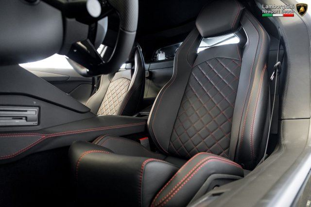

How To Put A Lamborghini Into Drive
Step 1
Take the key out of your pocket and unlock the car. Be careful when using a Lamborghini key- sometimes the company has a finger sensor on the back of the key to make sure the owner of the key is the only one able to unlock the vehicle. If someone else tries to do so, the car alarm could go off, triggering a call to police and further reprocussions if something goes wrong.
Step 2
Open the car door and get in the drivers seat. Because the vehicle is so low to the ground to attain fast speeds, be careful opening the door near curbs or high ground. The door could hit the ground and scrape the paint off which would be extremely expensive to replace. Sitting down in the drivers seat can be tough because the drivers seat is also as low to the ground as the outside of the car. To make the most comfortable approcah of sitting in the car, grab the door handle, put your hand on the roof of the car and slowly squat down until you can safely seat yourself in it.
Step 3
Put the key in the cupholder and press the START button to start the engine. Most people do not know this, but a Lamborhini does not acutally have an ignition slot to insert the car key. The key has sensors in it that link with the car once they are both in the vehicle. When the car senses the key is inside, the START button will light up. After the button lights up, you will need to lift the red guard ver the button and then hit START.
Step 4
Press the BREAK pedal in order to be able to shift gears from Park to DRIVE.
Step 5
Hit the GAS pedal and enjoy the ride!
Just Kidding because that would be innappropriate to condone such activity.
- List item 1
- List item 2
- List item 3
- It takes about 130 people to hand-craft the Murcielago SV. The entire car is made of carbon fibre, except the steel roof and the doors.
- Ferruccio Lamborghini chose the bull logo for Lamborghini because his sun sign was Taurus.
- Lamborghini provides two Gallardos to the Italian state police, which uses the cars for delivering organ transplants to patients.